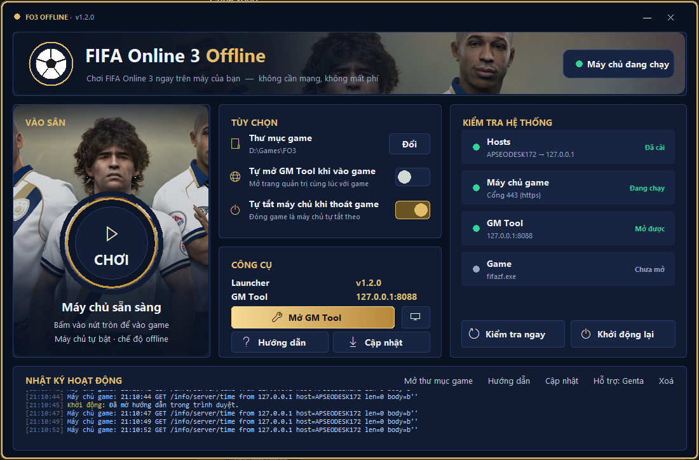
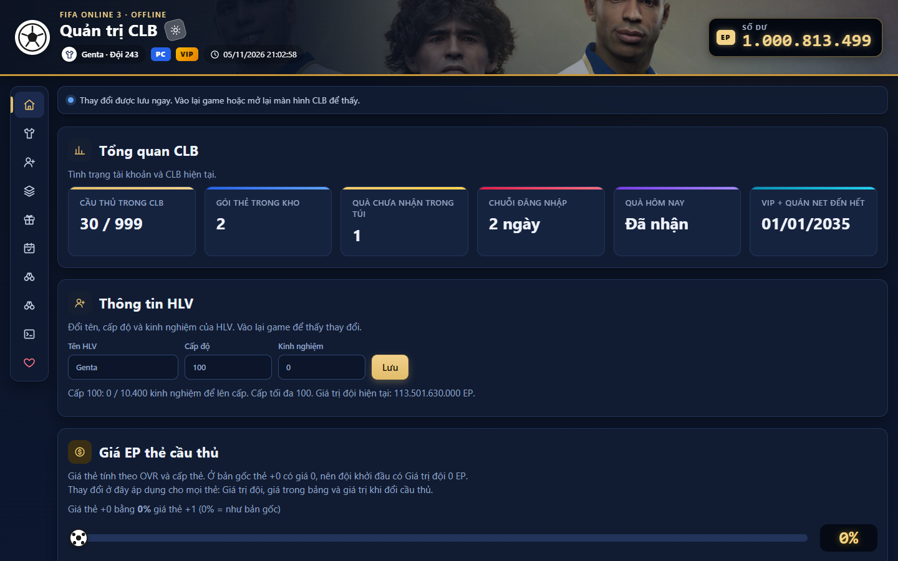

★Giới thiệu nhanh
FO3 Offline chạy hoàn toàn trên máy của bạn: không cần tài khoản online, không mất phí. Bạn chỉ cần biết hai thứ:
FO3 Offline Launcher.exe trong thư mục game)Tự bật máy chủ offline, kiểm tra máy, mở game và tải bản vá mới, tất cả chỉ bằng vài cú bấm.
127.0.0.1:8088)Trang quản trị CLB: EP, cầu thủ (có ảnh mặt), nâng cấp thẻ, HLV, gói thẻ, quà hằng ngày…
Mỗi lần chơi chỉ cần: Mở Launcher → bấm CHƠI → (tuỳ thích) mở GM Tool chỉnh CLB → vào lại màn hình CLB trong game để thấy thay đổi.
0Chuẩn bị lần đầu
Chỉ làm một lần trên mỗi máy tính.
- Chép đầy đủ thư mục game (ví dụ
D:\Games\FO3) sang máy. Bên trong phải cófifazf.exe, thư mụcServer, thư mụcHuongDan(tài liệu này) vàFO3 Offline Launcher.exe. - Cho phép trong phần mềm diệt virus. Nếu Windows Defender báo lạ, thêm cả thư mục game vào danh sách cho phép (Exclusion). Launcher đóng gói từ Python nên đôi khi bị nhận nhầm.
- Mở Launcher bằng cách nhấp đúp
FO3 Offline Launcher.exe. Nếu Windows hiện “Windows protected your PC”, bấm More info → Run anyway. Launcher tự bật máy chủ ngay khi mở. - Cài hosts. Ở mục Kiểm tra hệ thống, nếu dòng Hosts báo “Cài ngay ›” thì bấm vào đó và chọn Có / Yes khi Windows hỏi quyền Admin.
- (Tuỳ chọn) Bấm nút nhỏ hình màn hình cạnh Mở GM Tool để tạo lối tắt ngoài Desktop.
fifazf.exe.1Launcher
Màn hình chính của Launcher. Các số màu vàng tương ứng với phần giải thích bên dưới.

1 2 3 4 5 6 7 8- 1Vào sân: nút tròn CHƠI để mở game.
- 2Trạng thái máy chủ: chấm xanh là đang chạy. Bấm để bật / tắt.
- 3Tùy chọn: thư mục game và hai công tắc tự động.
- 4Công cụ: phiên bản / thông báo cập nhật, Mở GM Tool, lối tắt, Hướng dẫn, Cập nhật.
- 5Kiểm tra hệ thống: Hosts, Máy chủ game, GM Tool, Game.
- 6Kiểm tra ngay / Khởi động lại máy chủ.
- 7Nhật ký hoạt động của Launcher và máy chủ.
- 8Liên kết nhanh: Mở thư mục game, Hướng dẫn, Cập nhật, Hỗ trợ: Genta, Xoá.
① Vào game với nút CHƠI
- Mở Launcher: máy chủ tự bật, dòng chữ dưới nút đổi thành “Máy chủ sẵn sàng”.
- Bấm nút tròn CHƠI. Game tự mở, bạn đăng nhập như bình thường.
- Trong lúc chơi hãy giữ Launcher mở (có thể thu nhỏ). Đóng Launcher sẽ tắt máy chủ và game mất kết nối.
③ Tùy chọn
| Mục | Ý nghĩa |
|---|---|
| Thư mục game · nút Đổi | Đường dẫn tới thư mục có fifazf.exe. |
| Tự mở GM Tool khi vào game | Mỗi lần bấm CHƠI, GM Tool tự mở trong trình duyệt. |
| Tự tắt máy chủ khi thoát game | Thoát game là máy chủ tự tắt theo. |
④ Công cụ
- Launcher: phiên bản hiện tại. Khi có bản vá mới, chữ đổi thành Có bản cập nhật ›, bấm vào để cài (xem Cập nhật bản vá).
- GM Tool: địa chỉ
127.0.0.1:8088. - Mở GM Tool: mở trang quản trị trong trình duyệt mặc định.
- Nút hình màn hình: tạo lối tắt “FO3 Offline” ngoài Desktop.
- Hướng dẫn: mở tài liệu này trong trình duyệt.
- Cập nhật: kiểm tra và cài bản vá mới ngay.
⑤ ⑥ Kiểm tra hệ thống
Chấm xanh là ổn, xám là chưa chạy, vàng / đỏ là cần xử lý.
| Dòng | Bình thường | Nếu có vấn đề |
|---|---|---|
| Hosts | Đã cài | Bấm Cài ngay › và đồng ý quyền Admin. |
| Máy chủ game | Đang chạy | Bản cũ (.bat) hoặc Không phản hồi: bấm Khởi động lại. Nếu cổng 443 bị phần mềm khác chiếm (Skype, IIS, VMware…), hãy tắt phần mềm đó. |
| GM Tool | Mở được | Chỉ chạy khi máy chủ đang chạy. |
| Game | Đang chạy / Chưa mở | Chỉ để theo dõi. |
⑦ ⑧ Nhật ký hoạt động
Khung dưới cùng hiện các thông báo theo thời gian. Gặp lỗi thì chụp khung này gửi Genta để được hỗ trợ nhanh hơn.
- Mở thư mục game: mở thư mục game trong File Explorer.
- Hướng dẫn: mở tài liệu này (file
HuongDan\index.htmltrong thư mục game). - Cập nhật: kiểm tra bản vá mới ngay.
- Hỗ trợ: Genta: mở Facebook của Genta.
- Xoá: xoá các dòng đang hiển thị.
🔄 Cập nhật bản vá MỚI
Khi Genta sửa lỗi hay thêm tính năng, bạn không cần tải lại cả bộ game. Launcher tự so từng file với bản mới nhất và chỉ tải những file đã thay đổi.
- Mở Launcher (cần có mạng). Vài giây sau, nếu có bản vá, nhật ký báo “Có bản vá …: n file (… MB)” và mục Công cụ hiện Có bản cập nhật ›. Bạn cũng có thể bấm link Cập nhật trong nhật ký để kiểm tra ngay.
- Thoát game trước (game khoá file khi đang chạy).
- Bấm Có bản cập nhật › và chọn Có / Yes. Launcher tải file, kiểm tra từng file có tải đúng không, sao lưu dữ liệu tài khoản, tắt máy chủ, thay file rồi bật lại máy chủ.
- Nếu bản vá có cả Launcher mới, Launcher tự đóng và mở lại.
Server\gamedata\backup\ (xem Dữ liệu & sao lưu).2Web GM Tool
Trang quản trị CLB chạy ngay trên máy bạn. Mọi thay đổi được lưu ngay lập tức.
- Đảm bảo máy chủ đang chạy (chấm xanh trên Launcher).
- Bấm Mở GM Tool, hoặc gõ
http://127.0.0.1:8088vào trình duyệt (Chrome, Edge, Cốc Cốc…).
Bố cục giao diện

- Thanh tiêu đề: tên HLV, số đội, đồng hồ và Số dư EP ở góc phải. Nút mặt trăng cạnh “Quản trị CLB” để đổi giao diện sáng / tối.
- Thanh menu bên trái (biểu tượng, từ trên xuống): Tổng quan, Cầu thủ CLB, Thêm cầu thủ, Thêm hàng loạt, Gói thẻ & Túi đồ, Quà hằng ngày, HLV, Đổi cầu thủ, Nhật ký server.
- Dòng thông báo phía trên: báo kết quả mỗi thao tác (xanh thành công, đỏ lỗi).
- Ảnh mặt cầu thủ hiện ở mọi bảng. Thẻ chưa có ảnh sẽ được máy chủ tự tải bổ sung.

🏠 Tổng quan

Tổng quan CLB
Số cầu thủ / sức chứa (999), gói thẻ trong kho, quà chưa nhận trong Túi, chuỗi ngày đăng nhập, quà hôm nay và hạn VIP.
Thông tin HLV
Đổi Tên HLV, Cấp độ (tối đa 100) và Kinh nghiệm, bấm Lưu. Đăng nhập lại game để thấy.
Giá EP thẻ cầu thủ
- Thanh trượt “Giá thẻ +0”: thẻ +0 bản gốc giá 0 EP; kéo để thẻ +0 có giá bằng một phần trăm giá thẻ +1.
- Hệ số nhân giá (0,1 – 10) và Về mặc định.
- Giá tự đặt cho từng thẻ: nhập SPID và giá ở +1, bấm Lưu giá.
Số dư EP
Nhập số EP rồi chọn Cộng EP, Trừ EP hoặc Đặt số dư.
Tỷ lệ đập thẻ
Kéo thanh trượt chọn tỷ lệ thành công khi nâng cấp thẻ, bấm Lưu tỷ lệ; Dùng tỷ lệ gốc để trở về như game gốc.
👕 Cầu thủ CLB

Toàn bộ cầu thủ đang sở hữu kèm ảnh mặt và vai trò Chính, Thay, Dự bị, Đội phụ. Bấm tiêu đề cột có dấu ↕ để sắp xếp.
- Lọc: tên, Đội bóng, Quốc gia, Vị trí, Vai trò, Mùa; Xóa lọc để hiện lại tất cả.
- Cấp thẻ (+1 … +10) và Cấp độ (LV): chọn ngay trong bảng, lưu tức thì.
- Sang đội phụ / Về đội chính, Thanh lý.
- Thao tác hàng loạt: tích ô đầu dòng (hoặc ô ở tiêu đề), rồi dùng thanh thao tác: Đặt cấp thẻ, Đặt cấp độ, Sang đội phụ, Về đội chính, Thanh lý.
- Thanh lý nhanh theo mùa: bỏ toàn bộ thẻ dự bị của một mùa; 18 cầu thủ trong đội hình luôn được giữ lại.
➕ Thêm cầu thủ

- Lọc theo Tên, Giải đấu → Đội bóng, Quốc gia, Vị trí, Mùa. Kết quả hiện ngay khi gõ.
- Chọn Cấp thẻ (+1 … +10).
- Bấm Thêm vào CLB (vào thẳng CLB) hoặc Gửi vào Túi (vào game bấm Nhận).
- Thêm nhiều thẻ: tích chọn các dòng rồi bấm Thêm tất cả vào CLB.
🃏 Chi tiết thẻ & so sánh

- Ảnh cầu thủ cỡ lớn, OVR và vị trí, CLB, quốc tịch, chiều cao, cân nặng, chân thuận, ngày sinh, kỹ thuật, chân yếu, công / thủ, giá EP.
- Đổi Cấp thẻ và Cấp độ ngay trên cửa sổ để xem chỉ số tăng thêm bao nhiêu.
- Ghim để so sánh: ghim thẻ này rồi mở thẻ khác để so sánh hai thẻ cạnh nhau.
📚 Thêm hàng loạt

Thêm cả loạt thẻ: toàn bộ một mùa, toàn bộ một đội, hoặc một đội trong một mùa.
- Giải đấu (Ngoại Hạng Anh và LaLiga luôn ở đầu) → Đội bóng (tuỳ chọn) → Mùa (tuỳ chọn).
- Chọn Cấp độ và Cấp thẻ cho các thẻ sẽ thêm; cột “OVR sau khi thêm” cập nhật theo.
- Lọc thêm theo tên, Quốc gia, Vị trí nếu cần.
- Mặc định đã chọn sẵn các thẻ bạn chưa có. Bấm nút Thêm … cầu thủ vào CLB ở cuối bảng và xác nhận.
| Nút | Tác dụng |
|---|---|
| Chọn tất cả / Bỏ chọn | Chọn / bỏ chọn mọi thẻ đang hiện. |
| Chọn vừa chỗ trống | Chỉ chọn đủ số chỗ còn trống trong CLB, ưu tiên OVR cao. |
| Bỏ thẻ đã có | Bỏ chọn thẻ đã sở hữu (nhãn “Đã có”). |
🎁 Gói thẻ & Túi đồ

- Tặng gói thẻ: chọn Gói và Số lượng, bấm Tặng. Gói nằm trong kho đồ trong game.
- Gửi quà vào Túi đồ: đặt tên quà, EP, kèm gói hoặc một thẻ (SPID + cấp thẻ), bấm Gửi quà, vào game bấm Nhận.
- Các gói trong cửa hàng: bảng tham khảo tên, mã và giá gói.
📅 Quà hằng ngày

- Lần vào game đầu tiên mỗi ngày nhận quà vào Túi đồ; bỏ một ngày sẽ quay về Ngày 1.
- Nhận quà ngày kế tiếp ngay, Đặt lại chuỗi ngày.
- Bảng quà: sửa EP, gói, số lượng từng ngày; Thêm ngày; nhớ bấm Lưu bảng.
🧑💼 HLV MỚI

Thêm HLV
- Lọc theo vị trí (HLV trưởng, HLV thủ môn, Y tế…) hoặc gõ tên.
- Chọn số sao (có nửa sao như trong game, tối đa 5 sao) và số lượng.
- Bấm Thêm. HLV được gửi thẳng vào game, không cần tuyển.

HLV của CLB
- Full tất cả HLV: đưa mọi HLV lên 5 sao, mỗi dòng chỉ số +5.
- Cột Sao: đổi số sao từng HLV.
- Cột Chỉ số đang cộng: các dòng có ô chọn cho phép đổi chỉ số được cộng (tên tiếng Việt: Chuyền dài, Thể lực, Tốc độ…).
- Xoá: bỏ HLV. HLV đang bổ nhiệm phải bỏ bổ nhiệm trong game trước.
- CLB giữ tối đa 30 HLV. Trong game vào Quản lý đội → Quản lý HLV → HLV của tôi để bổ nhiệm.
🔁 Đổi cầu thủ

Trong game, đưa 2–10 cầu thủ ở Đội phụ cho tuyển trạch viên để đổi thẻ mới. Tại đây xem trạng thái tuyển trạch viên, thời gian chờ và điều kiện thưởng; Mở khóa tất cả tuyển trạch viên để dùng ngay.
🖥️ Nhật ký server

Các dòng mới nhất của máy chủ; Tải lại hoặc bật Tự tải lại mỗi 3 giây. Dùng để tìm lỗi, gặp sự cố thì chụp gửi Genta.
💾Dữ liệu & sao lưu
- Toàn bộ dữ liệu tài khoản (CLB, cầu thủ, EP, HLV, cup đang đá…) nằm trong file
Server\gamedata\state.json. - Cài đặt GM Tool (tỷ lệ đập thẻ…) nằm trong
Server\gamedata\enhancement_settings.json. - Mỗi lần cập nhật bản vá, Launcher chép một bản sao lưu vào
Server\gamedata\backup\state-ngày-giờ.json(giữ 10 bản gần nhất).
Khôi phục từ bản sao lưu
- Thoát game và đóng Launcher.
- Vào
Server\gamedata\backup\, chép file sao lưu muốn dùng raServer\gamedata\và đổi tên thànhstate.json(ghi đè file cũ). - Mở lại Launcher và vào game.
state.json sang cùng vị trí trên máy kia.💡Mẹo hay
- Vào lại màn hình CLB trong game sau mỗi lần chỉnh trên GM Tool.
- Có thể mở thẳng một mục GM Tool bằng địa chỉ, ví dụ
127.0.0.1:8088/#theomua,#pemain,#hlv, rồi lưu vào dấu trang. - Đội hình mạnh nhanh: Thêm hàng loạt theo đội yêu thích ở +5 trở lên, rồi Full tất cả HLV.
- CLB chứa tối đa 999 cầu thủ; game chậm khi CLB quá đông thì thanh lý bớt.
- Mở Launcher khi có mạng để nhận bản vá mới nhất.
?Câu hỏi thường gặp
Bấm CHƠI nhưng game không vào được / báo lỗi kết nối?
Xem khung Kiểm tra hệ thống: Hosts phải “Đã cài” và Máy chủ game “Đang chạy”. Nếu chưa, bấm Cài ngay hoặc Khởi động lại. Kiểm tra thêm phần mềm diệt virus.Cập nhật bản vá có làm mất tài khoản không?
Không. Launcher không bao giờ ghi đèstate.json và còn tự sao lưu trước mỗi lần cập nhật.
Launcher báo “Hãy thoát game trước khi cập nhật”?
Game khoá các file giao diện khi đang chạy. Thoát game rồi bấm cập nhật lại.Không kiểm tra được cập nhật?
Cần có mạng Internet. Không có mạng thì game vẫn chơi bình thường, chỉ là chưa nhận bản vá mới.GM Tool không tải được?
Bấm Khởi động lại trên Launcher rồi tải lại trang GM Tool (F5).Đã thêm cầu thủ / EP / HLV nhưng trong game chưa thấy?
Thoát ra rồi vào lại màn hình CLB (hoặc cửa hàng, túi đồ). HLV và thông tin HLV cần đăng nhập lại game. Quà trong Túi đồ cần bấm Nhận.Một số cầu thủ không có ảnh mặt?
Máy chủ tự tải ảnh còn thiếu khi có mạng; đăng nhập lại game để thấy. Cầu thủ không tìm được ảnh sẽ hiện hình bóng người.Có cần cài Python không?
Không. Launcher đã có sẵn mọi thứ cần thiết.☎Hỗ trợ
Gặp khó khăn, bạn chụp màn hình lỗi (kèm khung Nhật ký hoạt động của Launcher nếu có) và gửi cho mình nhé.
Cần Hỗ Trợ Cứ Nhắn Genta Nhé !!
Chúc bạn có những trận cầu thật vui cùng FO3 Offline ⚽